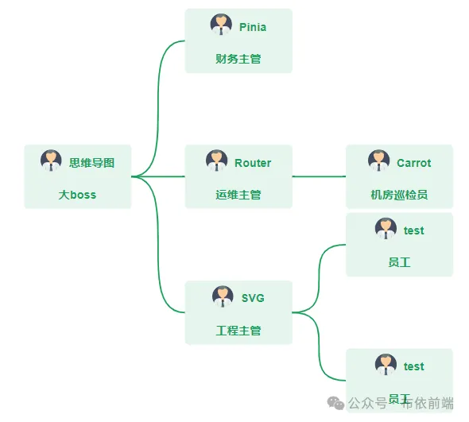
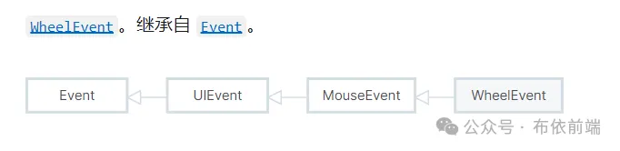
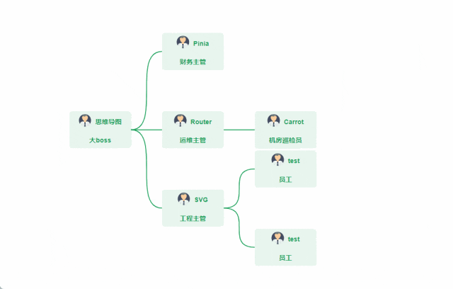
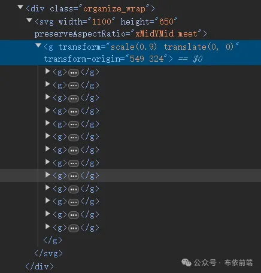

要实现鼠标滚轮缩放 SVG 内容，方法有两种，一种是借助第三方工具库，例如：svg-pan-zoom，另一个方案是原生手写，第一种对新手友好，只需要稍微配置一下参数就可以实现鼠标滚轮缩放 SVG 内容了。第三方插件都有详细的使用文档参考，不做演示，文章主要介绍原生手写鼠标滚轮滚动缩放 SVG 详细内容。需要滚动的 SVG 内容如下：
滚轮（wheel）事件会在滚动鼠标滚轮或操作其他类似输入设备时触发。使用鼠标滚轮事件也分为两种，一种是监听 window 对象鼠标滚动事件 wheel， 一种是元素绑定滚轮事件或者监听元素滚轮事件。
基本用法如下：
// 监听window滚轮事件
window.addEventListener("wheel", onWheel);
// 适当时机必须移除监听
window.removeEventListener("wheel", onWheel);
functions onWheel (event) {
// TO DO
}
// 监听文档鼠标滚轮滚动事件，记得移除监听
document.addEventListener("wheel", onWheel);
// 监听元素滚轮事件
Element.onwheel = onWheel;
<!-- vue 中元素绑定滚轮事件 -->
<div @wheel="onWheel"></div>
事件类型在 TypeScript 中非常有用，正确类型事件对象才会有属性提示。
这里要关注的是 deltaX 和 deltaY, 一个是鼠标滚轮水平滚动值，一个鼠标垂直滚动值。
event.deltaY 值大于 0，表示鼠标滚轮向后滚动。
event.deltaY 值小于 0，表示鼠标滚轮向前滚动。
实现 SVG 内容缩放，需要借助 g 元素，用 g 元素把所有 SVG 内容包裹起来，通过 transform 属性来进行缩放。
<template>
<div class="organize_wrap">
<svg ref="svgRef" :width="svg.width" :height="svg.height" preserveAspectRatio="xMidYMid meet"
@wheel="onWheel">
<g :transform="`scale(${scaleLevel}) translate(${movePo.x}, ${movePo.y})`" ref="zoomGroupRef">
<g v-for="(item, index) in newTreeData" :key="index">
<foreignObject
:x="item.x"
:y="item.y"
:width="item.node.width"
:height="item.node.height"
requiredExtensions="http://www.w3.org/1999/xhtml"
class="foreign-bject">
<div class="node">
<section class="head">
<p class="image"><img src="./assets/common.png" alt="" srcset=""></p>
<span>{{ item.node.label }}</span>
</section>
<section >{{ item.node.position }}</section>
</div>
</foreignObject>
</g>
<g v-for="(item, index) in edgesData" :key="index">
<path :d="`M${item.points[0].x},${item.points[0].y}
C${item.points[2].x},${item.points[2].y} ${item.points[3].x},${item.points[3].y}
${item.points[1].x},${item.points[1].y}`" stroke="#18a058" stroke-width="2" fill="none"/>
</g>
</g>
</svg>
</div>
</template>
// 滚动事件
const zoomGroupRef = ref(null);
const scaleLevel = ref(1);
let couter = 1;
const onWheel = (evt) => {
// 阻止默认的滚轮行为
evt.preventDefault();
const svgWidth = svgRef.value.clientWidth;
const svgHeight = svgRef.value.clientHeight;
const centerX = svgWidth / 2;
const centerY = svgHeight / 2;
zoomGroupRef.value.setAttribute("transform-origin", `${centerX} ${centerY}`);
// deltaY 大于0向后滚，小于0向前滚
if (evt.deltaY < 0 && scaleLevel.value > 0.1) {
couter -= 0.1;
} else {
couter += 0.1;
}
scaleLevel.value = parseFloat(couter.toFixed(1));
};
避免 SVG 不影响外部滚动条，如果有的话，需要设置阻止默认事件，避免事件穿透，从而专注 SVG 的鼠标滚轮滚动事件。为此特意加了如下代码：
// 阻止默认的滚轮行为
evt.preventDefault();
还有一件值得关注的事情，SVG 绑定鼠标滚轮滚动事件后，按照上面 js 代码逻辑，的确能滚动缩放成功，但它是以 SVG 左上角作为内容缩放的参照点，内容会变小移动到左上角，放大移动到右下角，不是想要的，想要的效果是以 SVG 为中心来缩放，这样内容放大缩小后就不会随便移动位置。此时就需要计算 SVG 的中心点，需要 SVG 的宽高各一半作为缩放参照中心点。
这样就有了下面的代码。
const svgWidth = svgRef.value.clientWidth;
const svgHeight = svgRef.value.clientHeight;
const centerX = svgWidth / 2;
const centerY = svgHeight / 2;
zoomGroupRef.value.setAttribute("transform-origin", `${centerX} ${centerY}`);
transform-origin 就是修改缩放参照中心点的属性，这和 CSS 的transform-origin 功能一样的，只不过这里用在了 SVG 元素上。
有意思的是，当你利用滚轮事件缩放时，如果转换浮点数值，js 浮点数计算 0.1 的加减法，就会出现多位小数的情况，这里需要转换一下，新增一个变量，最终将变量值转换成想要的一位小数即可。
// deltaY 大于0向后滚，小于0向前滚
if (evt.deltaY < 0 && scaleLevel.value > 0.1) {
couter -= 0.1;
} else {
couter += 0.1;
}
scaleLevel.value = parseFloat(couter.toFixed(1));
scaleLevel.value > 0.1 这个条件是很有必有的，如果不添加，缩放内容就会出现小到看不见，消失于画布之上，只有当缩放值大于 0.1 或者其他值时，才会进行缩放操作。另外 0.1 缩放也是比较合理的，有很好的视角过渡效果，也可以尝试其他值。 不出意外的话，效果将会是这样的。
 